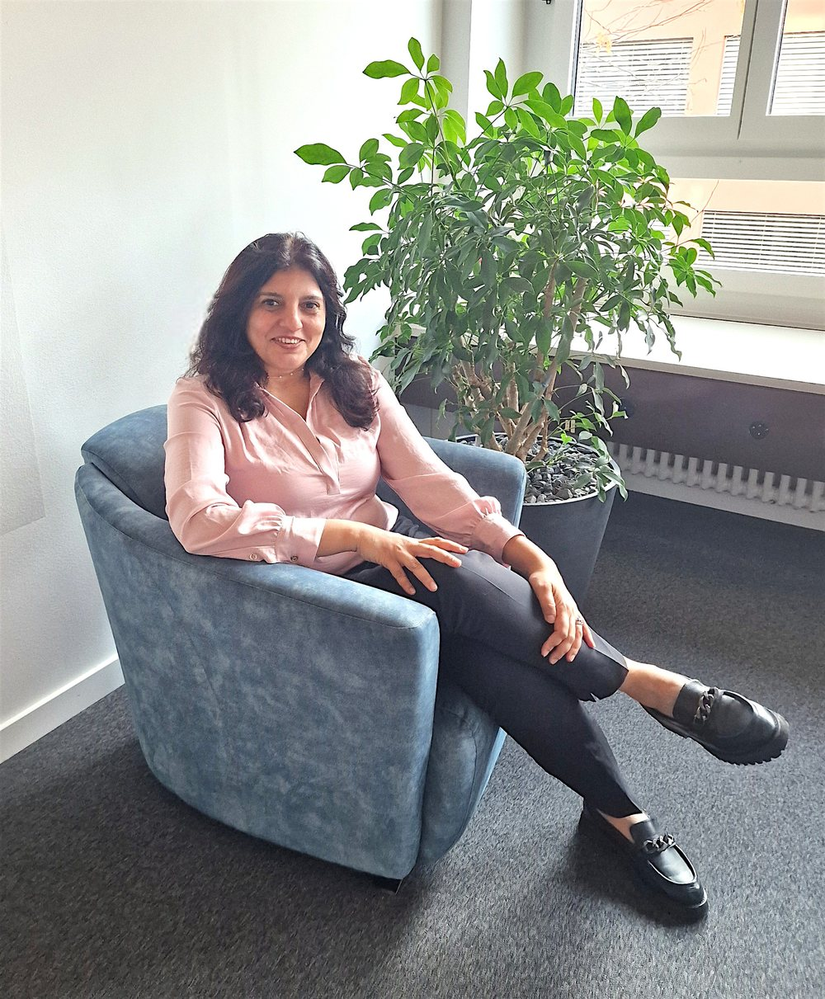

Reach the root
We slow down enough to see the patterns beneath the pressure, naming what has quietly been running the show.
For individuals and organizations ready to create meaningful transformation from the inside out, in life, leadership, and the workplace.
Shift deeply, with compassion
Flow with yourself
Trust your intuition
Create what you desire
About Dulce Fernandes
My approach is based on deep insight, profound compassion, and mind shifting techniques that allow a rapid but sustainable transformation.
MBA (University of Strathclyde) and Certified Life Coach. Based in Zug, Switzerland, providing online services to clients worldwide.
Book your discovery call →For more than 10 years, I have led enterprise transformations across complex, global, and regulated organizations. That experience taught me that lasting change is never only about strategy, structures, or processes. At its heart, transformation is about people.
My understanding of change is also deeply personal. While navigating a demanding career, relationships, and single parenting, I began to realize how easily we can appear strong on the outside while feeling disconnected within. In 2023, one idea shifted my perspective: your outside is merely a reflection of your inside. It led me inward to explore the beliefs, patterns, and unconscious ways of being that shape how we live, lead, and relate.
What I discovered is that deep change does not always have to take a long time. When we reach the root of what is holding us back, deep shifts can happen rapidly. I bring together this understanding with my experience in transformation, an MBA from the University of Strathclyde, and my work as a Certified Life Coach.
Today, I help individuals get to the root more quickly, reconnect with what is authentic and meaningful, and create lasting shifts across health, wealth, love, and purpose. I help leaders and organizations uncover the patterns influencing how they think, relate, decide, and work together.

Go inward to transform, not to disappear. The purpose of inner work is to help you live more fully, sooner.
The approach
Every engagement moves through three movements. They repeat, deepen, and compound over the time we work together.
We slow down enough to see the patterns beneath the pressure, naming what has quietly been running the show.
Through deep insight and mind shifting techniques, we loosen the old story and build a felt sense of a new way to be.
You carry the change into real decisions, relationships, and leadership, with support until it feels like home.
Ways to work together
A relaxed first conversation to explore where you are, what you want to shift, and whether we are the right fit.
Sustained one to one coaching for lasting change in how you lead, relate, and live day to day.
Coaching and workshops that help leaders and teams strengthen self awareness, relationships, and how they navigate change.
In their words
Dulce helped me hear myself again. I lead my team from a calmer, clearer place now, and everyone around me feels it.
The work was gentle and honest at the same time. Six months on, the shifts are still holding, in my relationships and my career.
Our leadership team came in guarded and left connected. Dulce created a space where honesty felt safe.
Contact me
Tell me a little about where you are and what you are hoping to shift. I read every message personally and will reply within two working days.